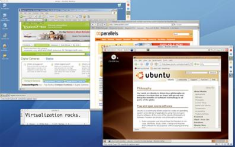

Processor History 處理器歷史 <<
Previous Next >> Integrated Graphics Processing Unit 集成圖形處理單元（GPU）
Virtualization 虛擬化
Virtualization is a wonderful addition to our CPUs. Virtualization is taking the computer world by storm, saving us a ton of money in the process. In the past, if we wanted to run multiple operating systems, we would have to have multiple computers, but not anymore. Using hardware-assisted virtualization, we can enable a host program or host operating system (think a single physical computer) to run one or more guest operating systems (think virtual computers) inside the host OS’s desktop. In the image below, you can see a Macintosh OSX system running Windows in a program window, as well as Ubuntu Linux in another program window. In this example, we have three different operating systems in use on a single computer at the same time. There are many programs that allow this to occur, including the vastly popular commercial program VMWare and the freeware equivalent VirtualBox.
虛擬化是CPU的絕佳補充。虛擬化正在席捲計算機世界，在此過程中為我們節省了大量資金。過去，如果要運行多個操作系統，則必須有多台計算機，但現在不再需要。使用硬件輔助虛擬化，我們可以使主機程序或主機操作系統（認為是一台物理計算機）在主機OS的桌面內運行一個或多個來賓操作系統（認為是虛擬計算機）。在下面的圖像中，您可以在程序窗口中查看運行Windows的Macintosh OSX系統，並在另一個程序窗口中查看Ubuntu Linux。在此示例中，我們在同一台計算機上同時使用三種不同的操作系統。有許多程序可以使這種情況發生，包括廣受歡迎的商業程序VMWare和等同於免費軟件的VirtualBox。
Why would we want to run multiple systems, though? Well, what if you work for a company that only uses a custom program it built for Windows but you own a Macintosh and need to run that program at home? In the old days, you would buy a PC just to run that single program. Now you can just load up a Virtual Windows 7 machine in your Macintosh and run the program. On the server side, servers costs tens of thousands of dollars. If you want to run a small web server, you may not need that type of processing. So, hosting companies can use a single server and provide hundreds of virtual servers on the single server and you pay only a few dollars a month for access.
但是，為什麼我們要運行多個系統？好吧，如果您在一家僅使用為Windows構建的自定義程序但擁有Macintosh並需要在家運行該程序的公司工作，該怎麼辦？在過去，您只需要購買一台PC即可運行該程序。現在，您只需在Macintosh中加載Virtual Windows 7計算機並運行該程序即可。在服務器方面，服務器要花費數万美元。如果要運行小型Web服務器，則可能不需要這種類型的處理。因此，託管公司可以使用單個服務器，並在單個服務器上提供數百個虛擬服務器，您每月只需支付幾美元的訪問費。
Virtualization is continuing to expand and will continue to do so for the foreseeable future. Many companies and individuals are migrating to the cloud where virtual machines exist without the need for on-premises hardware. In cloud computing, infrastructure to run multiple operating systems or software is purchased from a cloud computing company as a service.
虛擬化正在繼續擴展，並將在可預見的將來繼續擴展。許多公司和個人正在遷移到存在虛擬機而無需內部部署硬件的雲中。在雲計算中，從雲計算公司作為服務購買了運行多個操作系統或軟件的基礎架構。
Processor History 處理器歷史 <<
Previous Next >> Integrated Graphics Processing Unit 集成圖形處理單元（GPU）